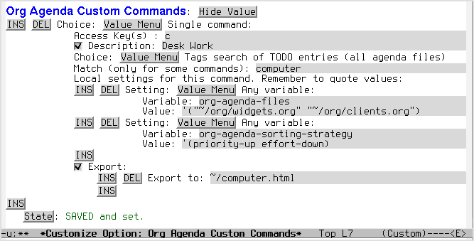
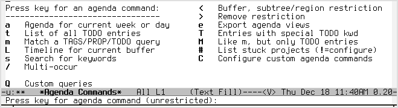
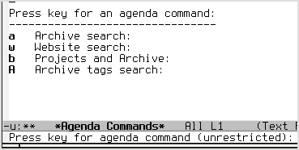

Custom Agenda Commands
Table of Contents
Introduction
Org-mode’s built-in agenda commands are powerful tools for searching your notes and for gathering, sorting, filtering, and displaying your tasks. As you become familiar with the power of the agenda commands, you may want to:
- create shortcuts for frequent agenda searches (e.g., a search for all TODOs with the tag “@computer”).
- combine different different searches into a single block agenda. (e.g., a daily agenda plus all TODO items with the tag “@work” and the tag “@computer”).
- change the query and display options for specific agenda searches (sorting, appearance, files used, etc.).
- set up automatic export of custom agenda views to a variety of formats (html, ps, txt).
- call user-defined functions from the agenda dispatcher.
All of these things can be accomplished with the variable org-agenda-custom-commands.
How to create custom agenda commands
The org-mode manual provides a comprehensive explanation of custom agenda commands. This tutorial is meant to supplement the manual by exploring some of the uses and benefits of such customization.
If you have not previously created a custom agenda command, the easiest way to get started is to type:
M-x customize-variable RET org-agenda-custom-commands
The customization buffer for the variable provides a nice interface for setting custom commands as well as a full explanation of the different components of the setting.
As the documentation explains, the configuration for each custom command is a list consisting of the following:
- 1) Key
- The shortcut for invoking the command in the agenda dispatcher (“h”, “J”, etc.).
- 2) Description (optional)
- The description of the command that will be displayed in the agenda dispatcher (optional).
- 3) Type of search
- The desired agenda display/search. The options include agenda, todo, search, tags, alltodo, tags-todo, todo-tree, tags-tree, occur-tree, or a user-defined function.
- 4) Search term
- Depending on the type of search, this will be a TODO keyword, a tag (or property), a word, or a regular expression.
- 5) Settings (optional)
- How the agenda command should search and display information. These are local settings, active only for the command in which they are set.
- 6) Export files (optional)
- If you want the agenda view to be automatically exported when you type C-c a e, then you can include the path to the exported file here. The file extension will determine the export format.
Sample customization
Here is a sample custom agenda command as one might set it in an .emacs file:
(setq org-agenda-custom-commands '(("c" "Desk Work" tags-todo "computer" ;; (1) (2) (3) (4) ((org-agenda-files '("~/org/widgets.org" "~/org/clients.org")) ;; (5) (org-agenda-sorting-strategy '(priority-up effort-down))) ;; (5) cont. ("~/computer.html")) ;; (6) ;; ...other commands here ))
The first line in this custom command contains:
- the key to trigger the search (“c”)
- a description of the search for the agenda dispatcher (“Desk Work”)
- the type of search (todo items matching a tag)
- the tag to search for (“computer”)
The next two lines (5) set local options for this agenda command only. Any options you set here will not interfere with your global agenda settings. In this particular command, the files widgets.org and clients.org will be searched and the agenda display will sort the todos first by priority (highest priority last), then by estimated effort (highest effort first)—regardless or your global org-agenda-sorting-strategy.
The last line (6) specifies that this agenda view should be exported as HTML to “~/computer.html” when the agenda export function is called (C-c a e).
And here is what the setting above looks like in an emacs customization buffer:

Of course, you need not include all of these components in every custom command. A more minimalistic set of instructions might look like this:
(setq org-agenda-custom-commands '(("w" todo "STARTED") ;; (1) (3) (4) ;; ...other commands here ))
This will produce a list of all tasks with the todo keyword STARTED.[1]
[1] If you omit a description the agenda dispatcher will simply show the search type and search string in place of a description.
In addition to agenda views, custom agenda commands can also be used to store commonly used searches, such as sparse trees and occur trees. See the manual’s section on sparse trees for further information.
As the examples above illustrate, agenda commands can range from simple stored searches to elaborate agenda views that diverge substantially from your normal agenda settings (different agenda files, different sorting strategies, different display options, etc.).
Now, let’s look at a few usage scenarios.
A use scenario: block agenda views
Perhaps the most common use of custom commands is to save the results of frequent agenda searches and (optionally) to combine multiple searches together in a single view.
Let’s imagine you’ve just settled in at your office desk in the morning, ready for a good day’s labor. You want to review your work before you get started. As part of your typical routine, you’d like to see:
- your scheduled tasks and upcoming deadlines
- any urgent tasks with the priority “A”
- any tasks you can do at your computer or in your office or on the phone
- any headlines tagged “project” for which CATEGORY=“elephants”
- any headlines tagged “review” in the file “circuspeanuts.org”
- any items that have the todo keyword “WAITING”
You could do a number of agenda searches by hand, first calling the agenda, then the tag-todo search (twice), then a tag search, then a tag search restricted to the file circuspeanuts.org, and finally the todo keyword search. In other words:
C-c a a C-c a M +PRIORITY="A" C-c a M computer|office|phone C-c a m project+CATEGORY="elephants" C-x b circuspeanuts.org C-c a < m review C-c a T WAITING
That would be a lot of manual labor before you had even begun your work. You could make your life easier by combining these searches into a single agenda command that compiles the results of all the searches:
(setq org-agenda-custom-commands '(("O" "Office block agenda" ((agenda "" ((org-agenda-span 1))) ;; limits the agenda display to a single day (tags-todo "+PRIORITY=\"A\"") (tags-todo "computer|office|phone") (tags "project+CATEGORY=\"elephants\"") (tags "review" ((org-agenda-files '("~/org/circuspeanuts.org")))) ;; limits the tag search to the file circuspeanuts.org (todo "WAITING")) ((org-agenda-compact-blocks t))) ;; options set here apply to the entire block ;; ...other commands here ))
You’ll notice that you can configure local settings for each of the searches in a block agenda. This powerful option enables fine-grained control of the agenda display. You could, for instance, create a block agenda that displays all headlines tagged “office” in the file “widgets.org”, followed by all headlines tagged “computer” in the file “clients.org”, and so on.
An example: GTD weekly review
If you’re into GTD, you can use org-agenda-custom-commands to create block views for the weekly review, such as:
(setq org-agenda-custom-commands '(("W" "Weekly Review" ((agenda "" ((org-agenda-span 7))); review upcoming deadlines and appointments ; type "l" in the agenda to review logged items (stuck "") ; review stuck projects as designated by org-stuck-projects (todo "PROJECT") ; review all projects (assuming you use todo keywords to designate projects) (todo "MAYBE") ; review someday/maybe items (todo "WAITING"))) ; review waiting items ;; ...other commands here ))
Making the most of local settings
Agenda commands can be used for much more than managing workload. They are also powerful ways to search and display notes in org files.
One use of custom agenda commands is to create different sets of search options. Let’s say, for instance, that you have three separate directories of org-files:
- “~/org/” for your project files
- “~/website/” for your published files
- “~/archive/” for old projects and notes
Most of the time, you only want to search your project files, so you set the global option appropriately:
(setq org-agenda-files (file-expand-wildcards "~/org/*.org"))
But there are no doubt times when you need to search your website or your archive files. To make this possible, you could create the following commands:
(setq org-agenda-custom-commands '(("Q" . "Custom queries") ;; gives label to "Q" ("Qa" "Archive search" search "" ((org-agenda-files (file-expand-wildcards "~/archive/*.org")))) ("Qw" "Website search" search "" ((org-agenda-files (file-expand-wildcards "~/website/*.org")))) ("Qb" "Projects and Archive" search "" ((org-agenda-text-search-extra-files (file-expand-wildcards "~/archive/*.org")))) ;; searches both projects and archive directories ("QA" "Archive tags search" org-tags-view "" ((org-agenda-files (file-expand-wildcards "~/archive/*.org")))) ;; ...other commands here ))
Now you are only a key command away from searching different sets of org files.
Note that the key triggers in the example above consist of two characters. If you have numerous custom agenda commands, this is a nice way to organize the agenda dispatcher into subpages. Only “Q” will appear on the main dispatcher view, the commands themselves will appear in a second view after you press “Q”.
First view:

Second view (after pressing “Q”):

The possibilities for using local search settings are myriad. One could, for instance, tweak display options for sparse tree searches via the variables org-show-hierarchy-above and org-show-entry-below (see this section of the manual). Or, as Carsten explained in this mailing list post, one can create custom agenda commands that default to a column view:
(setq org-agenda-custom-commands '(("x" "With deadline columns" alltodo "" ((org-agenda-overriding-columns-format "%20ITEM %DEADLINE") (org-agenda-view-columns-initially t)))))
Speeding up custom agenda commands
The most recent versions of org-mode (the git repo or versions greater
than 6.35) have a new variable that helps to speed up certain types of
agenda commands. The variable is org-agenda-entry-types and it can
be set locally within custom agenda commands via the customize
interface.
As always, you can learn more about the variable by typing M-x
describe-variable [RET] org-agenda-entry-types. According to the
docstring, the value org-agenda-entry-types is a list that consists
of any or all of the following items:
- :timestamp
- List items containing a date stamp or date range matching the selected date. This includes sexp entries in angular brackets.
- :sexp
- List entries resulting from plain diary-like sexps.
- :deadline
- List deadline due on that date. When the date is today, also list any deadlines past due, or due within `org-deadline-warning-days’. `:deadline’ must appear before `:scheduled’ if the setting of `org-agenda-skip-scheduled-if-deadline-is-shown’ is to have any effect.
- :scheduled
- List all items which are scheduled for the given date. The diary for today also contains items which were scheduled earlier and are not yet marked DONE.
By default, the daily/weekly agenda includes all of these items in its
results. Sometimes, however, you might want to construct agenda views
that consist only of certain types of entries, such as a list of
upcoming deadlines or a weekly or monthly calendar that includes only
timestamps and diary sexps. The variable org-agenda-entry-types
allows you to search for such a subset of items quite efficiently
(without bothering with the other items).
Here is an example of a weekly calendar using
org-agenda-entry-types.
(setq org-agenda-custom-commands '(("c" "Calendar" agenda "" ((org-agenda-span 7) ;; [1] (org-agenda-start-on-weekday 0) ;; [2] (org-agenda-time-grid nil) (org-agenda-repeating-timestamp-show-all t) ;; [3] (org-agenda-entry-types '(:timestamp :sexp)))) ;; [4] ;; other commands go here ))
The options above create (1) a weekly calendar that (2) starts on Sunday and (3) includes all instances of repeating timestamps. Moreover, the calendar is generated quite quickly because the agenda command (4) only searches for timestamps and diary sexps and does not bother with deadlines and scheduling timestamps.
Another example might arise if one wants an overview of all deadlines due within the next 365 days:
(setq org-agenda-custom-commands '(("d" "Upcoming deadlines" agenda "" ((org-agenda-time-grid nil) (org-deadline-warning-days 365) ;; [1] (org-agenda-entry-types '(:deadline)) ;; [2] )) ;; other commands go here ))
This custom command shows all deadlines that (1) fall due within the upcoming year. It does so quite efficiently by (2) looking for deadlines and nothing else.
Tip: if you want to exclude all agenda entry types, just set
org-agenda-entry-types to nil.
Other configuration ideas
This section is for additional ideas for configuring org-agenda-custom-commands. Feel free to add your own configurations here.
GTD contexts
Keyboard shortcuts to search by GTD contexts.
(setq org-agenda-custom-commands '(("g" . "GTD contexts") ("go" "Office" tags-todo "office") ("gc" "Computer" tags-todo "computer") ("gp" "Phone" tags-todo "phone") ("gh" "Home" tags-todo "home") ("ge" "Errands" tags-todo "errands") ("G" "GTD Block Agenda" ((tags-todo "office") (tags-todo "computer") (tags-todo "phone") (tags-todo "home") (tags-todo "errands")) nil ;; i.e., no local settings ("~/next-actions.html")) ;; exports block to this file with C-c a e ;; ..other commands here ))
Priorities
Shortcuts to display tasks by priority level:
(setq org-agenda-custom-commands '(("p" . "Priorities") ("pa" "A items" tags-todo "+PRIORITY=\"A\"") ("pb" "B items" tags-todo "+PRIORITY=\"B\"") ("pc" "C items" tags-todo "+PRIORITY=\"C\"") ;; ...other commands here ))
Calendar style views
The following code is useful if you want to see a weekly planner containing only appointments—that is, with deadlines and scheduled items omitted:
(setq org-agenda-custom-commands '(("c" "Weekly schedule" agenda "" ((org-agenda-span 7) ;; agenda will start in week view (org-agenda-repeating-timestamp-show-all t) ;; ensures that repeating events appear on all relevant dates (org-agenda-skip-function '(org-agenda-skip-entry-if 'deadline 'scheduled)))) ;; limits agenda view to timestamped items ;; ...other commands here ))
Another example: you could use the following custom command to see deadlines due within the next 60 days:
(setq org-agenda-custom-commands '(("d" "Upcoming deadlines" agenda "" ((org-agenda-entry-types '(:deadline)) ;; a slower way to do the same thing ;; (org-agenda-skip-function '(org-agenda-skip-entry-if 'notdeadline)) (org-agenda-span 1) (org-deadline-warning-days 60) (org-agenda-time-grid nil))) ;; ...other commands here ))
Printed agenda
Here’s a fairly complex example of an agenda. The command below will create a black-and-white block agenda that lists:
- An overview of appointments for the next seven days.
- I.e., timestamped items but not deadlines or scheduled tasks
- A compact daily agenda.
- A list of todos sorted by context.
The sorted todos look like this:
[ ] errands: Wash car [ ] errands: Grocery shopping [ ] home: Do laundry [ ] home: Take out trash
And the entire agenda will be saved in a two-column, landscape
postscript file when you type C-c a e.
Here’s the code:
(setq org-agenda-custom-commands '(("P" "Printed agenda" ((agenda "" ((org-agenda-span 7) ;; overview of appointments (org-agenda-start-on-weekday nil) ;; calendar begins today (org-agenda-repeating-timestamp-show-all t) (org-agenda-entry-types '(:timestamp :sexp)))) (agenda "" ((org-agenda-span 1) ; daily agenda (org-deadline-warning-days 7) ; 7 day advanced warning for deadlines (org-agenda-todo-keyword-format "[ ]") (org-agenda-scheduled-leaders '("" "")) (org-agenda-prefix-format "%t%s"))) (todo "TODO" ;; todos sorted by context ((org-agenda-prefix-format "[ ] %T: ") (org-agenda-sorting-strategy '(tag-up priority-down)) (org-agenda-todo-keyword-format "") (org-agenda-overriding-header "\nTasks by Context\n------------------\n")))) ((org-agenda-with-colors nil) (org-agenda-compact-blocks t) (org-agenda-remove-tags t) (ps-number-of-columns 2) (ps-landscape-mode t)) ("~/agenda.ps")) ;; other commands go here ))